Introduction
This package presents a fundamental workflow for spatial phenotyping, cell type annotation, multi-nucleus detection, quality control, and calculating cell neighborhoods from whole slide images of ultra-high multiplexed tissue captured by ‘Akoya Biosciences’ assays. The workflow leverages QuPath, StarDist, Cellpose, Seurat, and hoodscanR.
The upstream code are available in the folder of
extdata. The detailed documentation will be provide in
following sections.
The cdQuPath aims to provide a easy to use tool for
downstream analysis with Seurat and hoodscanR
for quality control and neighborhoods analysis.
Quick start
Here is an example using cdQuPath.
Installation
First, please download and install QuPath (v0.4.0 or newer). The cell
segmentation requires the cellpose
and stardist
extension for QuPath. Don’t forget to set the Python path
for the Cellpose extension.
Then, download a copy of the Groovy script to your local machine.
There are two scripts available:
cellpose_stardist_multiNucleis_underGUI.groovy and
ExportCellDetectionMeasurement.groovy.
Then, install cdQuPath and other packages required to run the examples.
library(BiocManager)
BiocManager::install("jianhong/cdQuPath")Step 1. Cell segmentation
This step involves merging the results from Cellpose and Stardist analyses.
Navigate to line 25 of the
cellpose_stardist_multiNucleis_underGUI.groovy script and
update the path of the stardistModel variable to match the
file path of your cell_seg_model.pb. Adjust the parameters
from line
26 to line 38 accordingly. You may want to change the
cytoChannels and measurementPercentileCutoff
according to your observations. The distanceCutoff is the
maximal cutoff distance of nucleus for multiple nucleus cells.
Then, select a region in the opened TIFF view window in QuPath. Start with a small region when testing the script, and expand it once you achieve the desired results. Please note that if you observe regional biases, you may want to exclude the biases regions. If it is un-avoidable, you may want to normalize the signals. We will discuss this later.
Finally, run the
cellpose_stardist_multiNucleis_underGUI.groovy script by
clicking the Run button in the Script Editor.

Step 2. Export the cell segmentation
The script ExportCellDetectionMeasurement.groovy is
designed to export cell segmentation data. Upon export, two files are
generated and saved in a folder prefixed with
measurementsExport.
- The
.tsvfile is compatible withcreateSeuratObj.R. - The
.geojsonfile is intended for reloading intoQuPath.
These exported files contain comprehensive information, including cell area, locations, marker signal statistics, and nucleus classification. The cell locations are particularly useful for neighborhood analysis.
Step 3. Work in R
Create a Seurat object from output tsv file.
tsv <- system.file("extdata", "sample.qptiff.tsv.gz",
package = "cdQuPath",
mustWork = TRUE)
seu <- createSeuratObj(tsv, useValue = 'Median',
markerLocations = CodexPredefined$markerLocations)
seu## An object of class Seurat
## 600 features across 1093 samples within 25 assays
## Active assay: RNA (24 features, 0 variable features)
## 1 layer present: counts
## 24 other assays present: Nucleus_Mean, Nucleus_Median, Nucleus_Min, Nucleus_Max, Nucleus_Std.Dev., Nucleus_Variance, Cytoplasm_Mean, Cytoplasm_Median, Cytoplasm_Min, Cytoplasm_Max, Cytoplasm_Std.Dev., Cytoplasm_Variance, Membrane_Mean, Membrane_Median, Membrane_Min, Membrane_Max, Membrane_Std.Dev., Membrane_Variance, Cell_Mean, Cell_Median, Cell_Min, Cell_Max, Cell_Std.Dev., Cell_Variance
## 1 dimensional reduction calculated: posQuality Control
The conventional method for evaluating dynamic range involves computing a signal-to-background (SNR) ratio. This is done by dividing the average intensity of the top 20 brightest cells by the average intensity of the weakest 10% of cells. An SNR value of 10 or higher is indicative of reliable image analysis. It is recommended that the SNR falls within the range of (10, Inf], typically exceeding 100. An SNR below 3 suggests that the antibodies are performing poorly.
## please make sure the default assay is 'RNA'
DefaultAssay(seu)## [1] "RNA"
dr <- dynamicRanges(seu)
dr## $brightest
## DAPI.01 CD163 CD127 sox9 CD14 CD4 mpo cd68
## 109.625 13.300 11.600 24.300 26.875 52.150 10.000 238.750
## cd45 foxp3 lcp1 pd1 cd8 hif1a ki67 cd19
## 19.700 8.750 18.350 7.400 10.525 30.575 80.625 17.650
## cd206 znf90 asma cd3 cd86 hist3h2a cd34 CD11c
## 12.550 34.850 20.875 2.150 11.925 105.600 50.000 42.000
##
## $weakest
## DAPI.01 CD163 CD127 sox9 CD14 CD4 mpo cd68
## 47.686992 2.148882 2.790650 0.000000 2.899390 5.625508 3.911585 69.067073
## cd45 foxp3 lcp1 pd1 cd8 hif1a ki67 cd19
## 4.411077 3.632622 6.510163 2.408537 3.322663 2.966463 3.584858 10.713415
## cd206 znf90 asma cd3 cd86 hist3h2a cd34 CD11c
## 6.490854 17.210874 0.000000 0.000000 9.333841 23.114329 10.100610 23.494411
##
## $dynamic_range
## DAPI.01 CD163 CD127 sox9 CD14 CD4 mpo cd68
## 2.298845 6.189265 4.156737 Inf 9.269190 9.270274 2.556508 3.456785
## cd45 foxp3 lcp1 pd1 cd8 hif1a ki67 cd19
## 4.466029 2.408728 2.818670 3.072405 3.167640 10.306886 22.490432 1.647467
## cd206 znf90 asma cd3 cd86 hist3h2a cd34 CD11c
## 1.933490 2.024883 Inf Inf 1.277609 4.568595 4.950196 1.787659
## markers may not work;
## Please note that DAPI.01 is used for cell detection.
avoid_markers <-
names(dr$dynamic_range)[dr$dynamic_range<3 | is.na(dr$dynamic_range)]
avoid_markers## [1] "DAPI.01" "mpo" "foxp3" "lcp1" "cd19" "cd206" "znf90"
## [8] "cd86" "CD11c"Verify the cell area and nucleus area for multi-nuclei.
# Visualize QC metrics as a violin plot
colnames(seu[[]])## [1] "orig.ident" "nCount_RNA"
## [3] "nFeature_RNA" "Cell.classification"
## [5] "Cell.X" "Cell.Y"
## [7] "Nucleus.Area.um.2" "Nucleus.Length.um"
## [9] "Nucleus.Circularity" "Nucleus.Solidity"
## [11] "Nucleus.Max.diameter.um" "Nucleus.Min.diameter.um"
## [13] "Cell.Area.um.2" "Cell.Length.um"
## [15] "Cell.Circularity" "Cell.Solidity"
## [17] "Cell.Max.diameter.um" "Cell.Min.diameter.um"
## [19] "Nucleus.Cell.area.ratio" "Cell.isMultiNucleis"
VlnPlot(seu,
features = c("Cell.Area.um.2",
"Nucleus.Area.um.2",
'Nucleus.Cell.area.ratio'),
split.by = 'Cell.isMultiNucleis',
pt.size = ifelse(ncol(seu)>500, 0, 1),
ncol = 3)
## if you want to save the plot, try
## ggsave(filename)
VlnPlot(seu, features = c('cd68', 'CD11c', 'cd34'),
pt.size = ifelse(ncol(seu)>500, 0, 1),
ncol = 3)Now, we can proceed with filtering the cells. Upon observation, we notice that the average area of single-nucleus cells is below 500. Therefore, we establish the cutoff for cell area at approximately three times the size of single-nucleus cells. Additionally, if the nucleus-to-cell area ratio is excessively high, it suggests potential issues with the cell area detection process. We will filter out those cells.
keep <- seu$Cell.Area.um.2<1500 & seu$Nucleus.Cell.area.ratio < .9
seu <- subset(seu,
cells = colnames(seu)[keep],
features = names(dr$dynamic_range)[!is.na(dr$dynamic_range)])
seu## An object of class Seurat
## 600 features across 1088 samples within 25 assays
## Active assay: RNA (24 features, 0 variable features)
## 1 layer present: counts
## 24 other assays present: Nucleus_Mean, Nucleus_Median, Nucleus_Min, Nucleus_Max, Nucleus_Std.Dev., Nucleus_Variance, Cytoplasm_Mean, Cytoplasm_Median, Cytoplasm_Min, Cytoplasm_Max, Cytoplasm_Std.Dev., Cytoplasm_Variance, Membrane_Mean, Membrane_Median, Membrane_Min, Membrane_Max, Membrane_Std.Dev., Membrane_Variance, Cell_Mean, Cell_Median, Cell_Min, Cell_Max, Cell_Std.Dev., Cell_Variance
## 1 dimensional reduction calculated: posNormalizing the data
The initial query is whether we are observing abnormally high or low intensity regions in specific sub-regions. If these variations are deemed unrelated to tissue-specific characteristics, it might be advisable to normalize each marker channel accordingly. The positional data of cells is contained within the reduction matrix labeled ‘pos’.
nrow(seu)## [1] 24
suppressMessages(
FeaturePlot(seu, slot='count',
features = rownames(seu)[1],
reduction = 'pos') + scale_y_reverse()
)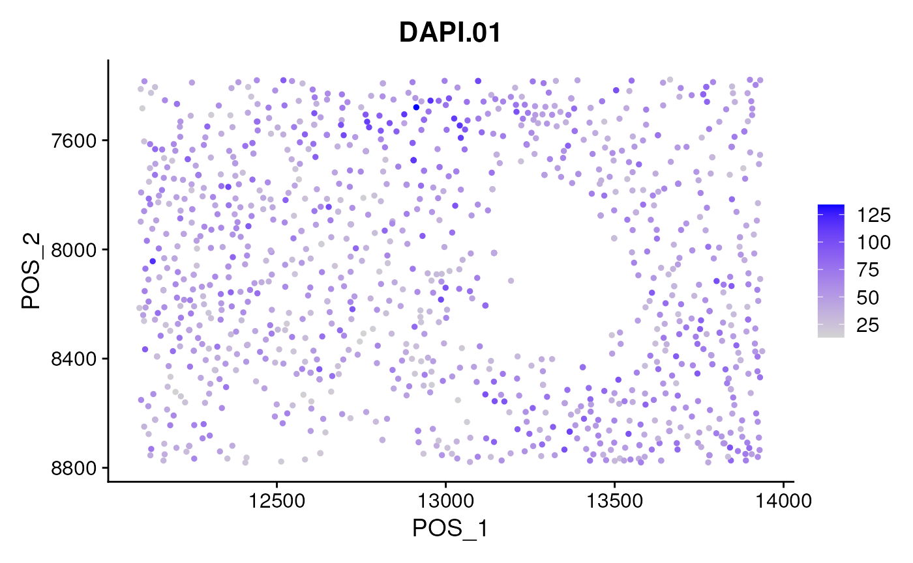
You may attempt to normalize the irregular sub-regions using LOESS
(Local Polynomial Regression Fitting) with the loessSmooth
function.
The next step involves cell-wise normalization. The available
normalization methods are ‘LogNormalize’, ‘CLR’ (centered log ratio),
‘RC’ (CPM), and ‘zscore’, which can be applied using the
normData function. The normalization method except for
‘zscore’ is borrowed from Seurat package.
seu <- normData(seu, normalizationMethod='zscore')Identification of highly variable markers (marker selection)
In the background, this step will execute the
FindVariableFeatures function and exclude the
‘avoidMarkers’ from the list of variable markers. Please ensure that
‘nFeatures’ is smaller than the total number of available markers.
seu <- findVarMarkers(
seu,
avoidMarkers=c('DAPI.01', 'hist3h2a'),
nFeatures = 10L)
VariableFeatures(seu)## [1] "ki67" "CD4" "cd34" "hif1a" "mpo" "znf90" "cd19" "CD127" "CD14"
plot1 <- VariableFeaturePlot(seu)
LabelPoints(plot = plot1, points = VariableFeatures(seu), repel = TRUE)Scaling the data and do cluster analysis
The following steps outline the standard process of single-cell
analysis in the Seurat package. You may adjust the process
accordingly to suit your needs.
all.markers <- rownames(seu)
seu <- ScaleData(seu, features = all.markers)
seu <- RunPCA(seu, features = VariableFeatures(seu))
dim <- seq.int(ncol(Embeddings(seu$pca)))
VizDimLoadings(seu, dims = dim,
nfeatures=length(VariableFeatures(seu)),
reduction = "pca")
seu <- FindNeighbors(seu, dims = dim)
seu <- FindClusters(seu, resolution = 0.9)## Modularity Optimizer version 1.3.0 by Ludo Waltman and Nees Jan van Eck
##
## Number of nodes: 1088
## Number of edges: 32836
##
## Running Louvain algorithm...
## Maximum modularity in 10 random starts: 0.7546
## Number of communities: 10
## Elapsed time: 0 seconds
seu <- RunUMAP(seu, reduction = "pca", dims = dim)
pt.size <- ifelse(ncol(seu)>500, 0, 2)
DimPlot(seu,
reduction = 'umap', label = TRUE,
pt.size = pt.size) + scale_y_reverse()
## check the distribution of the clusters in spatial position.
ncol <- ceiling(sqrt(length(unique(seu$seurat_clusters))))
DimPlot(seu,
reduction = 'pos', label = FALSE,
split.by = 'seurat_clusters',
ncol = ncol, pt.size = pt.size) + scale_y_reverse()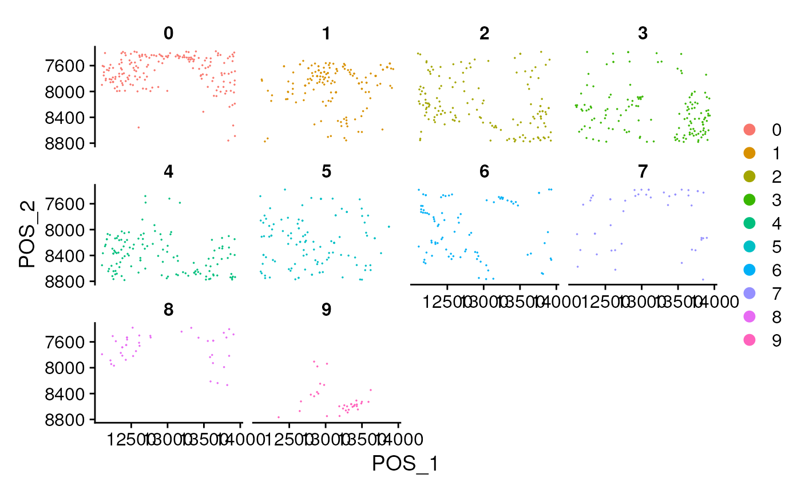
## check the nucleis distribution
dittoBarPlot(seu,
var = 'Cell.isMultiNucleis',
group.by='seurat_clusters')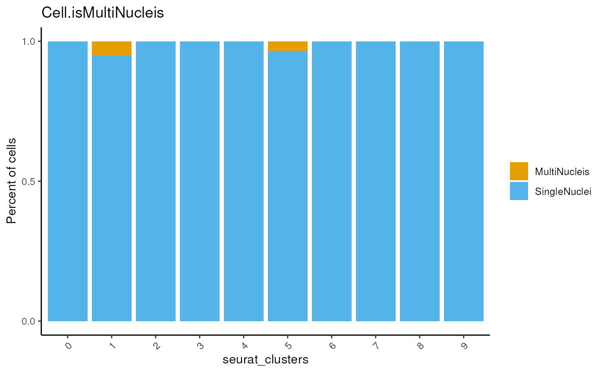
DimPlot(seu, reduction = 'pos', label = TRUE,
split.by = 'Cell.isMultiNucleis',
pt.size = pt.size) + scale_y_reverse()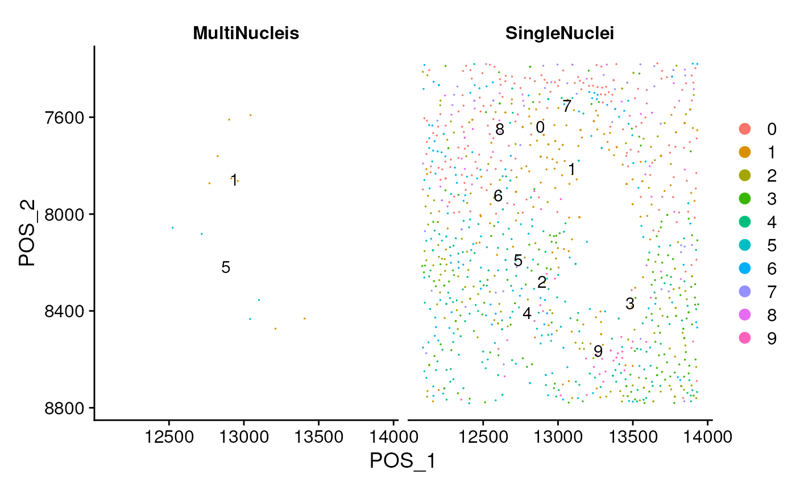
VlnPlot(seu,
features = c('Nucleus.Area.um.2',
'Cell.Area.um.2',
'Nucleus.Cell.area.ratio'),
pt.size = pt.size)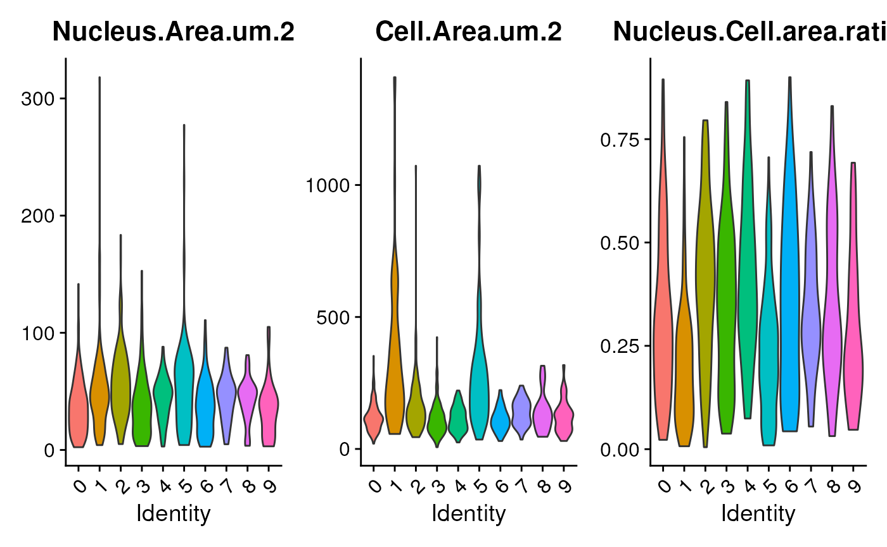
## Dot plot
markers <- unique(FindAllMarkers(seu)$gene)
DotPlot(seu, features = markers, scale = FALSE) + coord_flip()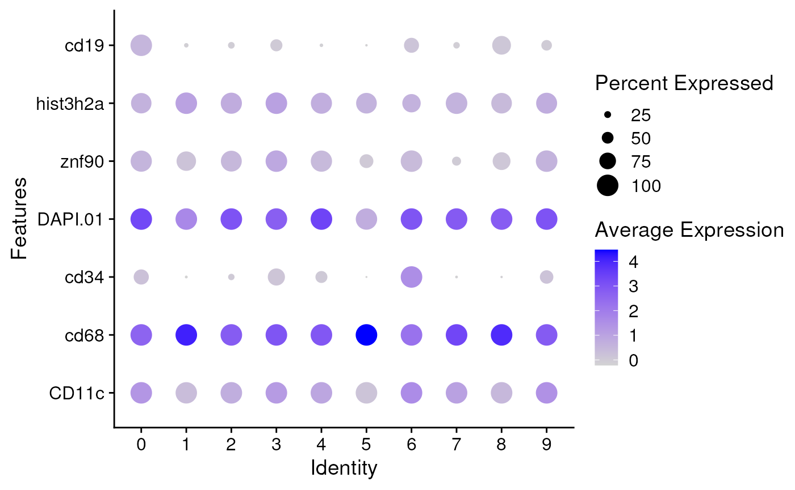
Rescale data using Gaussian Mixture Model
In the downstream analysis, cell types are detected by fitting a multiple-class Gaussian Mixture Model (GMM) to the re-scaled data. The raw intensities are converted to probabilities, and a cutoff of 0.5 is set for cell type assignment.
seu <- fitGMM(seu)
DotPlot(seu, features = markers, assay = 'GMM', scale = FALSE) + coord_flip()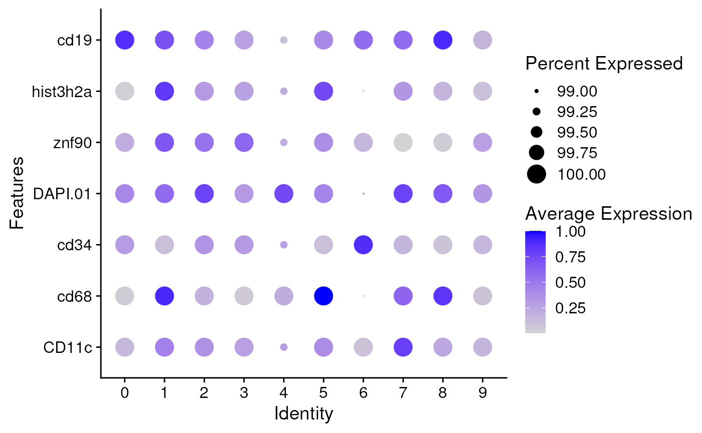
Correlation heatmap
The correlation heatmap will display the signal similarity among
different markers. The distance will be calculated using the
stats::dist function. Users can experiment with different
inputs such as z-scales, GMM data, and so on.
DefaultAssay(seu)## [1] "RNA"
p <- markerCorrelation(seu)
names(p)## [1] "counts" "data" "scale.data"
## plot the correlations for data, here it is Z-scale data
p[['data']]
## use GMM rescaled data to plot the correlation
DefaultAssay(seu) <- 'GMM'
p_GMM <- markerCorrelation(seu)
p_GMM[['data']]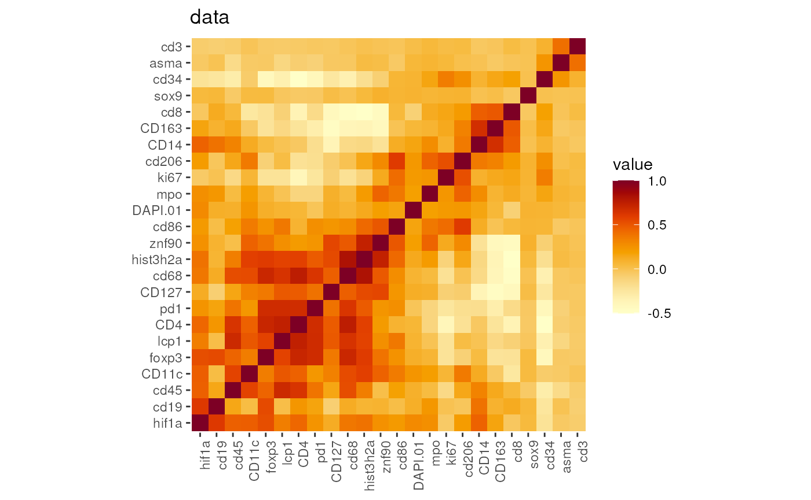
##
DefaultAssay(seu) <- 'RNA'Assign cell types
The phenotype will utilize the re-scaled data obtained through GMM. Two methods are available for assigning cell types: ‘Rank’ and ‘Boolean’. With the ‘Rank’ option, cell types are assigned based on the rank of probabilities for the positive markers. On the other hand, the ‘Boolean’ option assigns cell types according to the order of the classifier for the positive markers.
The metadata ‘celltype’ stores the assigned cell types for each Seurat cluster. Additionally, the metadata ‘celltype_all’ contains all possible cell types for each cell, determined by a cutoff of 0.5. Finally, the metadata ‘celltype_first’ represents the initial assignment.
seu <- detectCellType(seu)
table(seu$celltype)##
## B CELLS Cytotoxic T Cells Endothelial
## 220 163 87
## Helper T cells M1 Macrophage M2 MACROPHAGE
## 162 114 147
## MONOCYTE Proliferation Marker
## 47 148
## check the cell type annotation by clusters
DimPlot(seu, group.by = 'celltype')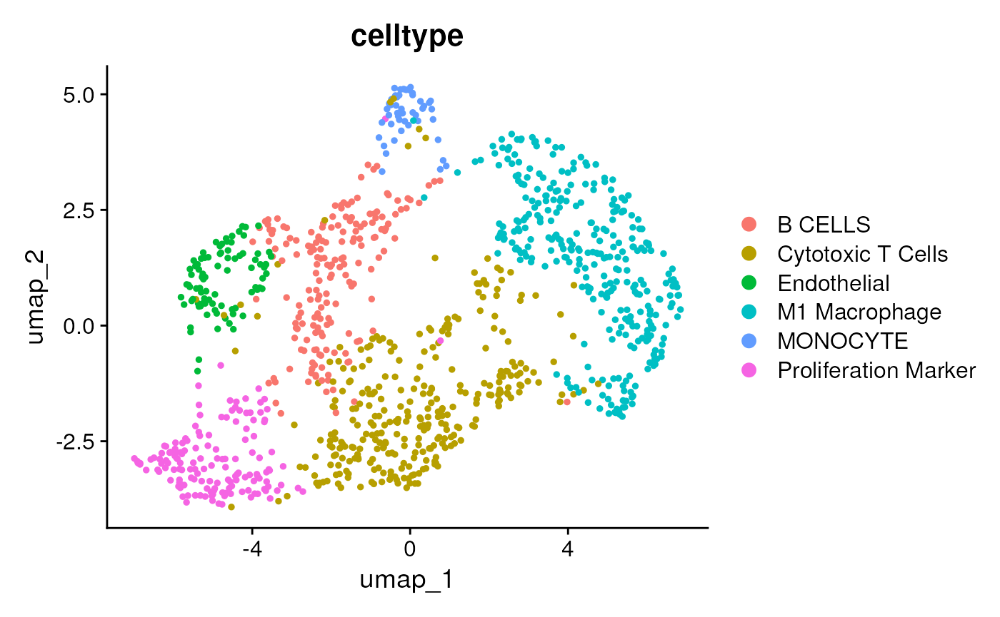
DimPlot(seu, group.by = 'celltype', reduction = 'pos') + scale_y_reverse()
dittoBarPlot(seu,
var = 'celltype',
group.by='Cell.isMultiNucleis')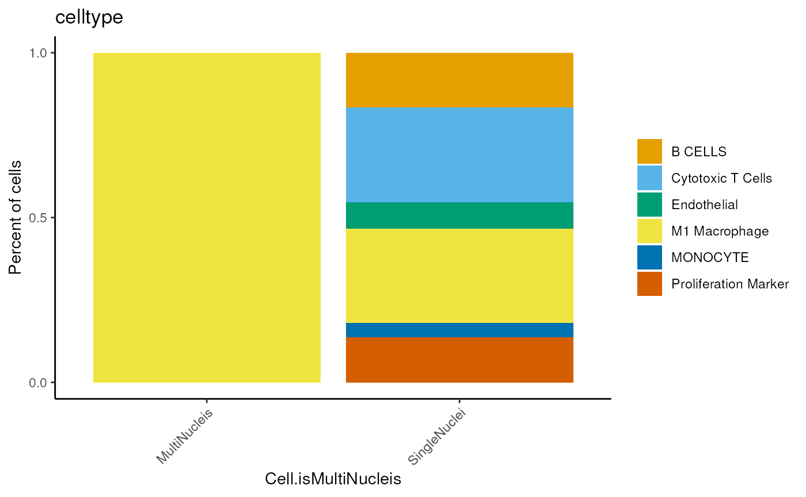
## check the first annotation of each cell, not restricted by seurat_cluster
DimPlot(seu, group.by = 'celltype_first', reduction = 'pos') + scale_y_reverse()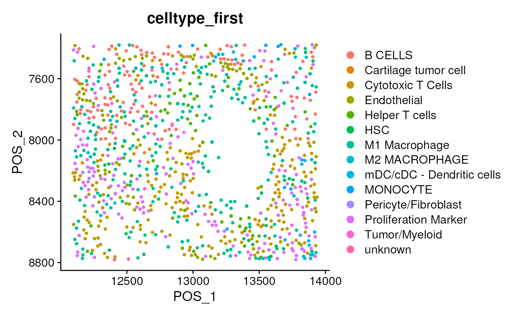
dittoBarPlot(seu,
var = 'celltype_first',
group.by='Cell.isMultiNucleis')
## check the signals for each celltype
Idents(seu) <- 'celltype'
DotPlot(seu, features = rownames(seu), scale = FALSE) + coord_flip() +
theme(axis.text.x = element_text(angle = 45, vjust = 1, hjust=1))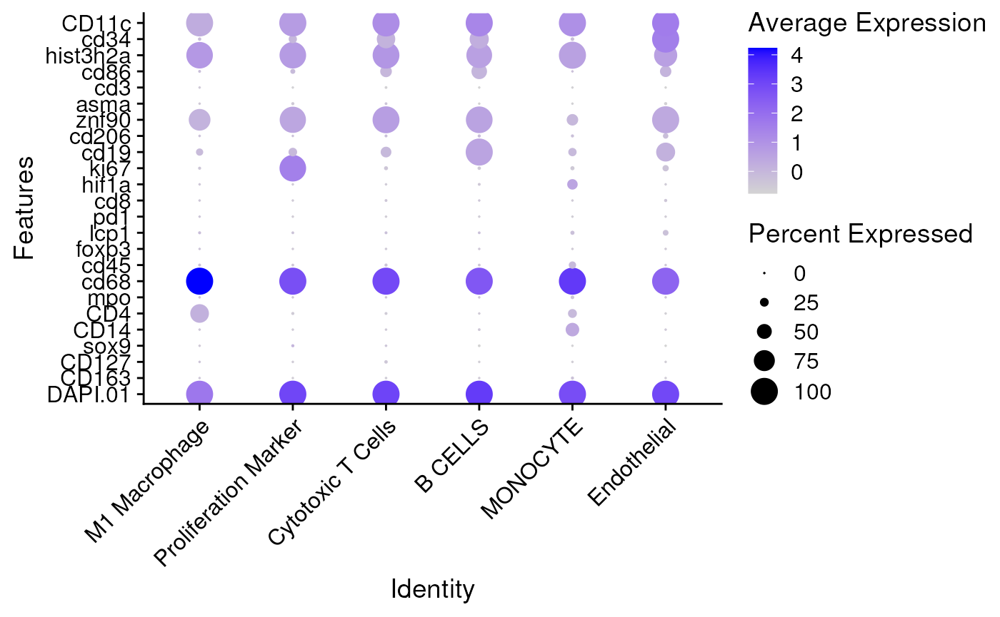
## export the celltype
ct <- data.frame(Object.ID=colnames(seu),
x=seu$Cell.X,
y=seu$Cell.Y,
CellType=seu$celltype)
head(ct, n=2)## Object.ID
## 8d5ccdac-31da-4930-81b6-dd9f272c10d7 8d5ccdac-31da-4930-81b6-dd9f272c10d7
## b21deea4-2d9c-4e0b-9c83-591622b33a9a b21deea4-2d9c-4e0b-9c83-591622b33a9a
## x y CellType
## 8d5ccdac-31da-4930-81b6-dd9f272c10d7 13142.86 8012.715 Helper T cells
## b21deea4-2d9c-4e0b-9c83-591622b33a9a 13142.86 8012.715 Helper T cells
## if you see postfix like _1, then run
ct$Object.ID <- sub('_\\d+$', '', ct$Object.ID)
## output to same folder: celltype_csv <- sub('qptiff.tsv', 'celltype.csv', tsv)
celltype_csv <- tempfile(fileext = '.csv')
write.csv(ct, file = celltype_csv, row.names = FALSE)
## after exporting, you can load the celltypes back to QuPath by running the script load_celltype.groovy in the scripts folder.
Merge multiple Seurat objects if necessary
If you have datasets from multiple sub-regions, you can process each one individually as shown above and then merge them. Occasionally, some images may not have the same background across different regions. To address this, you can detect the cells in each sub-region with a similar background or baseline and then perform GMM rescaling for each sub-region. Once this is done, you can combine the analyzed results to create a merged dataset.
tsv2 <- system.file("extdata", "sample2.qptiff.tsv.gz",
package = "cdQuPath",
mustWork = TRUE)
seu2 <- createSeuratObj(tsv2, useValue = 'Median',
markerLocations = CodexPredefined$markerLocations)
seu2## An object of class Seurat
## 600 features across 282 samples within 25 assays
## Active assay: RNA (24 features, 0 variable features)
## 1 layer present: counts
## 24 other assays present: Nucleus_Mean, Nucleus_Median, Nucleus_Min, Nucleus_Max, Nucleus_Std.Dev., Nucleus_Variance, Cytoplasm_Mean, Cytoplasm_Median, Cytoplasm_Min, Cytoplasm_Max, Cytoplasm_Std.Dev., Cytoplasm_Variance, Membrane_Mean, Membrane_Median, Membrane_Min, Membrane_Max, Membrane_Std.Dev., Membrane_Variance, Cell_Mean, Cell_Median, Cell_Min, Cell_Max, Cell_Std.Dev., Cell_Variance
## 1 dimensional reduction calculated: pos
keep <- seu2$Cell.Area.um.2<1500 & seu2$Nucleus.Cell.area.ratio < .9
table(keep)## keep
## FALSE TRUE
## 1 281
seu2 <- subset(seu2,
cells = colnames(seu2)[keep])
seu2 <- normData(seu2, normalizationMethod='zscore')
seu2 <- findVarMarkers(
seu2,
avoidMarkers=c('DAPI.01', 'hist3h2a'),
nFeatures = 10L)
seu2 <- ScaleData(seu2, features = rownames(seu2))
seu2 <- RunPCA(seu2, features = VariableFeatures( seu2))
dim <- seq.int(ncol(Embeddings(seu2$pca)))
seu2 <- FindNeighbors(seu2, dims = dim)
seu2 <- FindClusters(seu2, resolution = 0.9)## Modularity Optimizer version 1.3.0 by Ludo Waltman and Nees Jan van Eck
##
## Number of nodes: 281
## Number of edges: 8053
##
## Running Louvain algorithm...
## Maximum modularity in 10 random starts: 0.6137
## Number of communities: 5
## Elapsed time: 0 seconds
seu2 <- fitGMM(seu2)
seu2 <- detectCellType(seu2)
seu2$pca <- NULL # to advoid different pca columns error.
seu$orig.ident <- 'region1'
seu2$orig.ident <- 'region2'
mergedSeu <- merge(x=seu, y=list(seu2), merge.dr = TRUE)
mergedSeu## An object of class Seurat
## 624 features across 1369 samples within 26 assays
## Active assay: RNA (24 features, 8 variable features)
## 6 layers present: counts.1, counts.2, data.1, scale.data.1, data.2, scale.data.2
## 25 other assays present: Nucleus_Mean, Nucleus_Median, Nucleus_Min, Nucleus_Max, Nucleus_Std.Dev., Nucleus_Variance, Cytoplasm_Mean, Cytoplasm_Median, Cytoplasm_Min, Cytoplasm_Max, Cytoplasm_Std.Dev., Cytoplasm_Variance, Membrane_Mean, Membrane_Median, Membrane_Min, Membrane_Max, Membrane_Std.Dev., Membrane_Variance, Cell_Mean, Cell_Median, Cell_Min, Cell_Max, Cell_Std.Dev., Cell_Variance, GMM
## 3 dimensional reductions calculated: pos, pca, umap
Assays(mergedSeu)## An object of class "SimpleAssays"
## Slot "data":
## List of length 1
dittoBarPlot(mergedSeu,
var = 'celltype_first',
group.by='orig.ident')
FeaturePlot(mergedSeu, slot='count',
features = rownames(mergedSeu)[1],
reduction = 'pos',
ncol = 2) + scale_y_reverse()
DimPlot(mergedSeu, group.by = 'celltype', reduction = 'pos') + scale_y_reverse()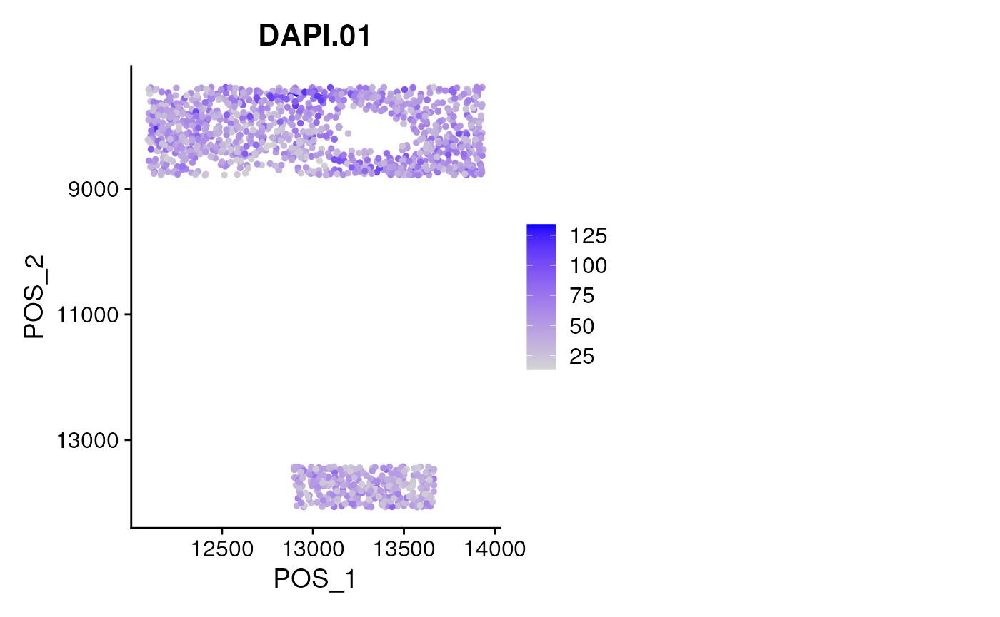
## use GMM rescaled data to plot the correlation
DefaultAssay(mergedSeu) <- 'GMM'
p_GMM <- markerCorrelation(mergedSeu, layers = 'data')
p_GMM[['data']]
##
DefaultAssay(mergedSeu) <- 'RNA'Detect the celltype by clissifier
You can also try to detect the cell type by a generalized k-Nearest Neighbors Classifier.
classifier <- readRDS(system.file('extdata', 'classifier.CSA.res0.3.rds',
package='cdQuPath'))
## this request lots of memory.
mergedSeu <- detectCellType(mergedSeu,
classifier=classifier,
celltypeColumnName='celltypeByKNN')
## this does not work for test dataset.
table(mergedSeu$celltypeByKNN)Neighborhoods analysis
After annotating cell types, we can assess whether these annotations
exhibit spatial enrichment and conduct analyses of cellular
neighborhoods throughout the tissue. Here we borrow the power of
hoodscanR to identifying interactions between spatial
communities.
clusterK <- 12
spe <- neighborhoodsAna(mergedSeu, ## if no merging step, use `seu`.
clusterK = clusterK,
k = 10, ## maximal 10 neightbors
anno_col = 'celltype_first')
# Plot the metrics for probability matrix
plotTissue(spe, color = entropy) +
scale_color_gradientn(colors=CodexPredefined$heatColor)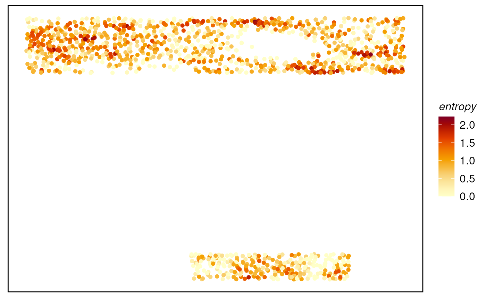
plotTissue(spe, color = perplexity) +
scale_color_gradientn(colors=CodexPredefined$heatColor)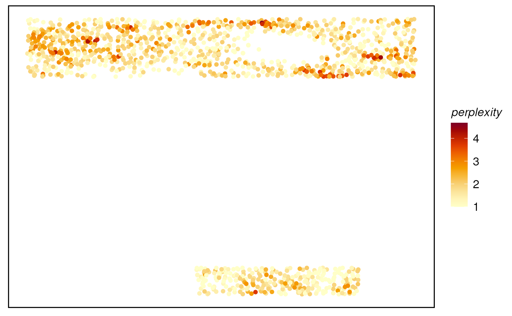
# Plot the clusters for the probability matrix
plotTissue(spe, color = clusters)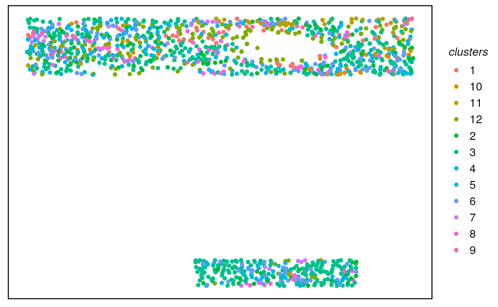
# Plot heatmap for neighbourhood analysis
plotColocal(spe, pm_cols = unique(spe$celltype))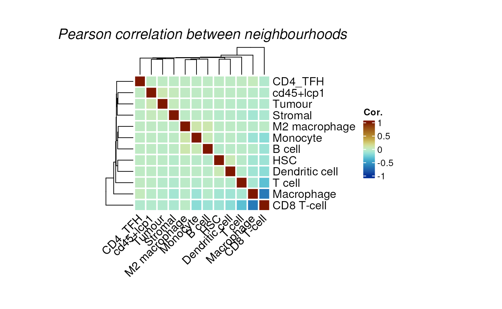
# Plot probability distribution
plotProbDist(spe, pm_cols = unique(spe$celltype),
by_cluster = TRUE, plot_all = TRUE,
show_clusters = as.character(seq(clusterK)))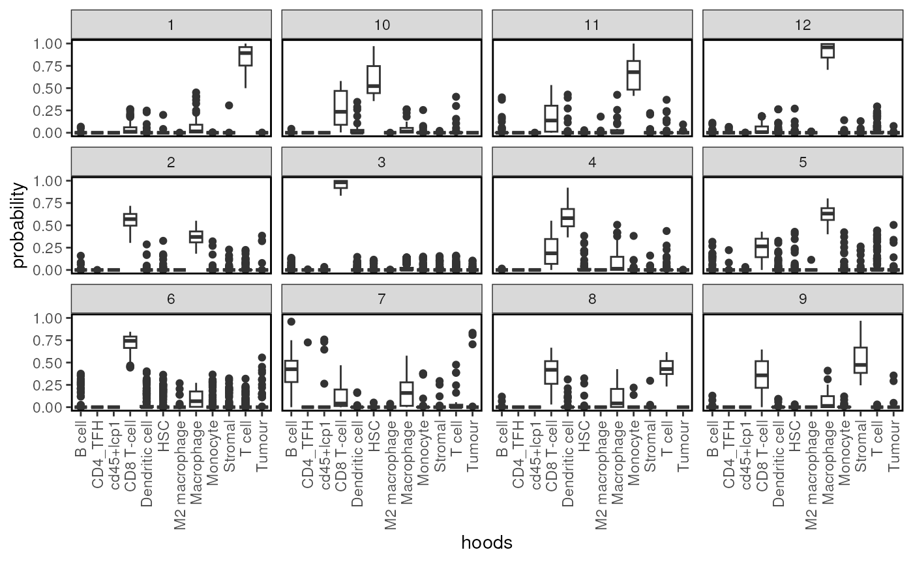
Co-occurrence analysis
The Jaccard Index is a statistic used for gauging the similarity and diversity of sample sets. The Jaccard Index is defined as:
maxgap <- max(colData(spe)$Cell.Length.um) * 2
ji <- JaccardIndex(spe, maxgap = maxgap)
plotJaccardIndex(ji)
The co-occurrence score gives us an indication on whether given two factors such as cell cluster, cell type, and etc, co-occur with each other at increasing distances across the tissue. The co-occurrence score is defined as:
## TODOThe spatial score define the distance ratio among three factors. The spatial score is defined as: .
## need to increase the neighbors number
spe <- neighborhoodsAna(mergedSeu, clusterK = clusterK,
k = 500, ## maximal 500 neighbors
anno_col = 'celltype_first')
ss <- spatialScore(spe,
celltypeCenter = "M2 MACROPHAGE",
celltypeLeft = "Cytotoxic T Cells",
celltypeRight = "Tumor/Myeloid")
head(ss)## spatialScore distR distL
## 8e6b7723-2547-4ad7-8bea-810ff6432fa4 13.374156 353.7328 26.44898
## aa7a6735-dfb3-480e-a8c1-efc7f45e136b 13.374156 353.7328 26.44898
## ec87b03d-aa83-4f5d-b9f5-654add3defc7 13.374156 353.7328 26.44898
## 6aa7e11c-19e1-4a15-b92d-cea75093ffae 2.320486 188.2077 81.10703
## 22845794-ab72-4356-a185-87d7427e81a7 2.524645 380.9258 150.88294
## 0944dbdc-b761-4469-bd24-1f8fc1742e50 2.449444 111.8723 45.67253
boxplot(ss$spatialScore)Session Info
R version 4.4.1 (2024-06-14) Platform: x86_64-pc-linux-gnu Running under: Ubuntu 22.04.4 LTS
Matrix products: default BLAS: /usr/lib/x86_64-linux-gnu/openblas-pthread/libblas.so.3 LAPACK: /usr/lib/x86_64-linux-gnu/openblas-pthread/libopenblasp-r0.3.20.so; LAPACK version 3.10.0
locale: [1] LC_CTYPE=en_US.UTF-8 LC_NUMERIC=C
[3] LC_TIME=en_US.UTF-8 LC_COLLATE=en_US.UTF-8
[5] LC_MONETARY=en_US.UTF-8 LC_MESSAGES=en_US.UTF-8
[7] LC_PAPER=en_US.UTF-8 LC_NAME=C
[9] LC_ADDRESS=C LC_TELEPHONE=C
[11] LC_MEASUREMENT=en_US.UTF-8 LC_IDENTIFICATION=C
time zone: Etc/UTC tzcode source: system (glibc)
attached base packages: [1] stats4 stats graphics grDevices utils
datasets methods
[8] base
other attached packages: [1] SpatialExperiment_1.15.1
SingleCellExperiment_1.27.2 [3] SummarizedExperiment_1.35.1
Biobase_2.65.0
[5] GenomicRanges_1.57.1 GenomeInfoDb_1.41.1
[7] IRanges_2.39.2 S4Vectors_0.43.2
[9] BiocGenerics_0.51.0 MatrixGenerics_1.17.0
[11] matrixStats_1.3.0 hoodscanR_1.3.3
[13] dittoSeq_1.17.0 ggplot2_3.5.1
[15] Seurat_5.1.0 SeuratObject_5.0.2
[17] sp_2.1-4 cdQuPath_0.99.0.4
[19] BiocStyle_2.33.1
loaded via a namespace (and not attached): [1] RcppAnnoy_0.0.22
splines_4.4.1 later_1.3.2
[4] tibble_3.2.1 polyclip_1.10-7 fastDummies_1.7.4
[7] lifecycle_1.0.4 doParallel_1.0.17 globals_0.16.3
[10] lattice_0.22-6 MASS_7.3-61 magrittr_2.0.3
[13] plotly_4.10.4 sass_0.4.9 rmarkdown_2.28
[16] jquerylib_0.1.4 yaml_2.3.10 httpuv_1.6.15
[19] sctransform_0.4.1 spam_2.10-0 spatstat.sparse_3.1-0
[22] reticulate_1.38.0 cowplot_1.1.3 pbapply_1.7-2
[25] RColorBrewer_1.1-3 abind_1.4-5 zlibbioc_1.51.1
[28] Rtsne_0.17 purrr_1.0.2 circlize_0.4.16
[31] GenomeInfoDbData_1.2.12 ggrepel_0.9.5 irlba_2.3.5.1
[34] listenv_0.9.1 spatstat.utils_3.1-0 pheatmap_1.0.12
[37] goftest_1.2-3 RSpectra_0.16-2 spatstat.random_3.3-1
[40] fitdistrplus_1.2-1 parallelly_1.38.0 pkgdown_2.1.0
[43] leiden_0.4.3.1 codetools_0.2-20 DelayedArray_0.31.11
[46] shape_1.4.6.1 tidyselect_1.2.1 UCSC.utils_1.1.0
[49] farver_2.1.2 spatstat.explore_3.3-1 jsonlite_1.8.8
[52] GetoptLong_1.0.5 e1071_1.7-14 progressr_0.14.0
[55] iterators_1.0.14 ggridges_0.5.6 survival_3.7-0
[58] systemfonts_1.1.0 foreach_1.5.2 tools_4.4.1
[61] ragg_1.3.2 ica_1.0-3 Rcpp_1.0.13
[64] glue_1.7.0 gridExtra_2.3 SparseArray_1.5.31
[67] xfun_0.47 dplyr_1.1.4 withr_3.0.1
[70] BiocManager_1.30.23 fastmap_1.2.0 fansi_1.0.6
[73] digest_0.6.37 R6_2.5.1 mime_0.12
[76] textshaping_0.4.0 colorspace_2.1-1 scattermore_1.2
[79] tensor_1.5 spatstat.data_3.1-2 utf8_1.2.4
[82] tidyr_1.3.1 generics_0.1.3 data.table_1.15.4
[85] class_7.3-22 httr_1.4.7 htmlwidgets_1.6.4
[88] S4Arrays_1.5.7 uwot_0.2.2 pkgconfig_2.0.3
[91] scico_1.5.0 gtable_0.3.5 ComplexHeatmap_2.21.0
[94] lmtest_0.9-40 XVector_0.45.0 htmltools_0.5.8.1
[97] dotCall64_1.1-1 bookdown_0.40 clue_0.3-65
[100] scales_1.3.0 png_0.1-8 spatstat.univar_3.0-0
[103] knitr_1.48 reshape2_1.4.4 rjson_0.2.22
[106] nlme_3.1-166 GlobalOptions_0.1.2 proxy_0.4-27
[109] cachem_1.1.0 zoo_1.8-12 stringr_1.5.1
[112] KernSmooth_2.23-24 parallel_4.4.1 miniUI_0.1.1.1
[115] desc_1.4.3 pillar_1.9.0 grid_4.4.1
[118] vctrs_0.6.5 RANN_2.6.1 promises_1.3.0
[121] xtable_1.8-4 cluster_2.1.6 evaluate_0.24.0
[124] magick_2.8.4 cli_3.6.3 compiler_4.4.1
[127] rlang_1.1.4 crayon_1.5.3 future.apply_1.11.2
[130] labeling_0.4.3 mclust_6.1.1 plyr_1.8.9
[133] fs_1.6.4 stringi_1.8.4 viridisLite_0.4.2
[136] deldir_2.0-4 munsell_0.5.1 lazyeval_0.2.2
[139] spatstat.geom_3.3-2 Matrix_1.7-0 RcppHNSW_0.6.0
[142] patchwork_1.2.0 future_1.34.0 shiny_1.9.1
[145] highr_0.11 ROCR_1.0-11 igraph_2.0.3
[148] bslib_0.8.0